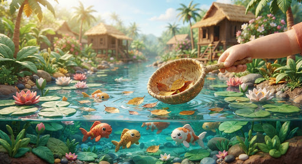
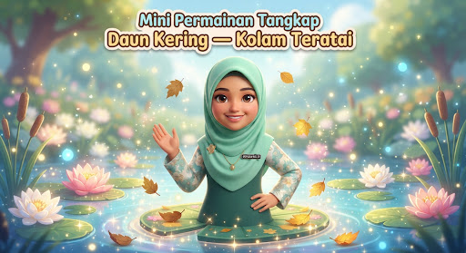

spa
TAMAN HARMONI • AMALAN IHSAN & KEBERSIHAN
school
P. Islam & Moral Thn 1
Tangguk Daun Kering! 🍂✨
Bantu bersihkan permukaan Kolam Teratai agar air kekal jernih dan ikan koi bernafas riang!
timer
0:42
Masa Tinggal
eco
30/50
Daun Bersih
military_tech
+160
Mata Ihsan

eco
30/50 Bersih
schedule
0:42
+20 Bersih!
auto_awesome
🐟 Koi: Sangat Riang & Selesa!
water_drop
Status Kejernihan Air Kolam
85% Bersih
🟡 Daun Bersepah
✨ Kolam Cermin Berkilau!

Ustazah Melur
“Masha-Allah, hebat anakanda Wira! Menjaga kebersihan kolam daripada daun reput adalah amalan mulia. Air yang bersih membekalkan oksigen segar untuk ikan-ikan koi kita!”
sports_esports Pusat Kawalan Tangguk Kolam
Mod Sentuh 3D
shopping_basket
Tangguk Buluh
Aktif 🟢
Kaut daun terapung berhampiran jambatan
waves
Kocak Aliran
Sedia 💧
Hanyutkan daun ke sudut tepian kolam
local_florist
Kelopak Teratai
Dilindungi 🛡️
Lindungi kelopak daripada daun reput
sentiment_very_satisfied
Kegembiraan Koi
5/5 ⭐ Ceria
bubble_chart
Oksigen Air
Jernih & Segar
featured_seasonal_and_gifts
4 Ganjaran Dibuka
Peti Ganjaran Sesi Ini
verified
+120 XP
Pahala Kebersihan
monetization_on
+180 Syiling
Tabung Kampung
handyman
Tangguk Buluh
Alatan Wira
workspace_premium
Kolam Kristal
Lencana Ihsan